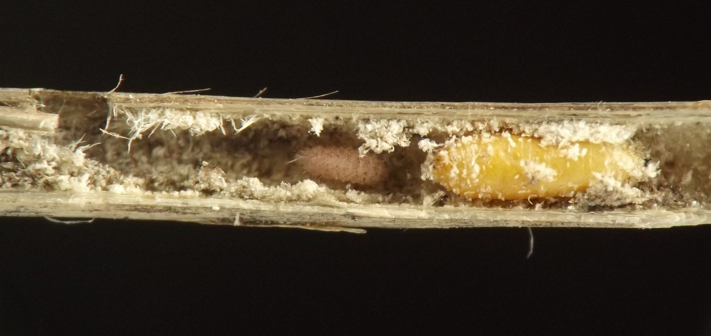
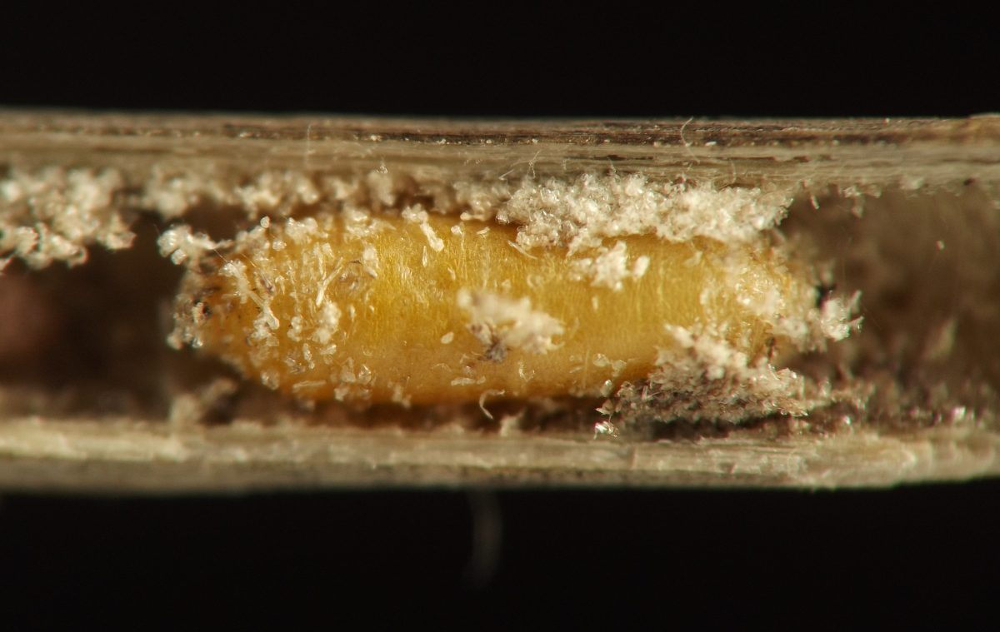
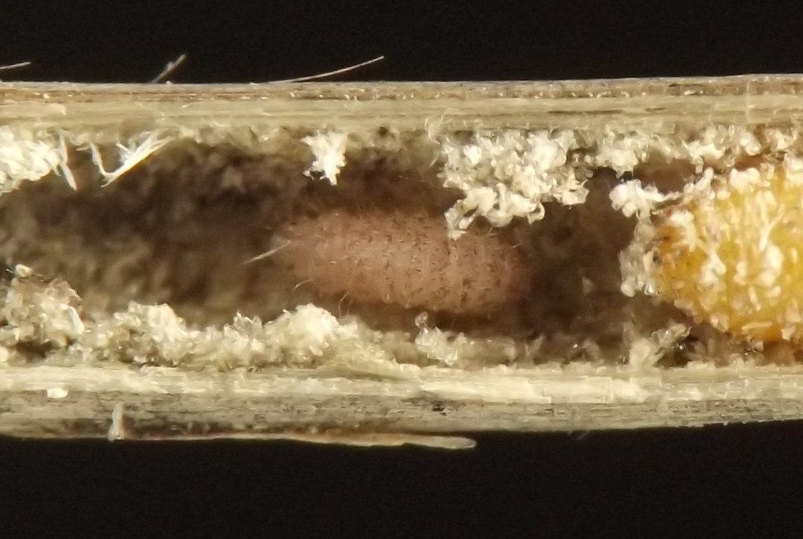
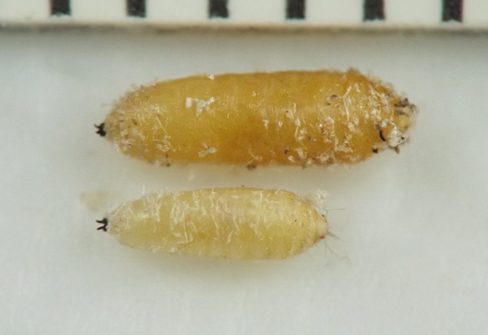
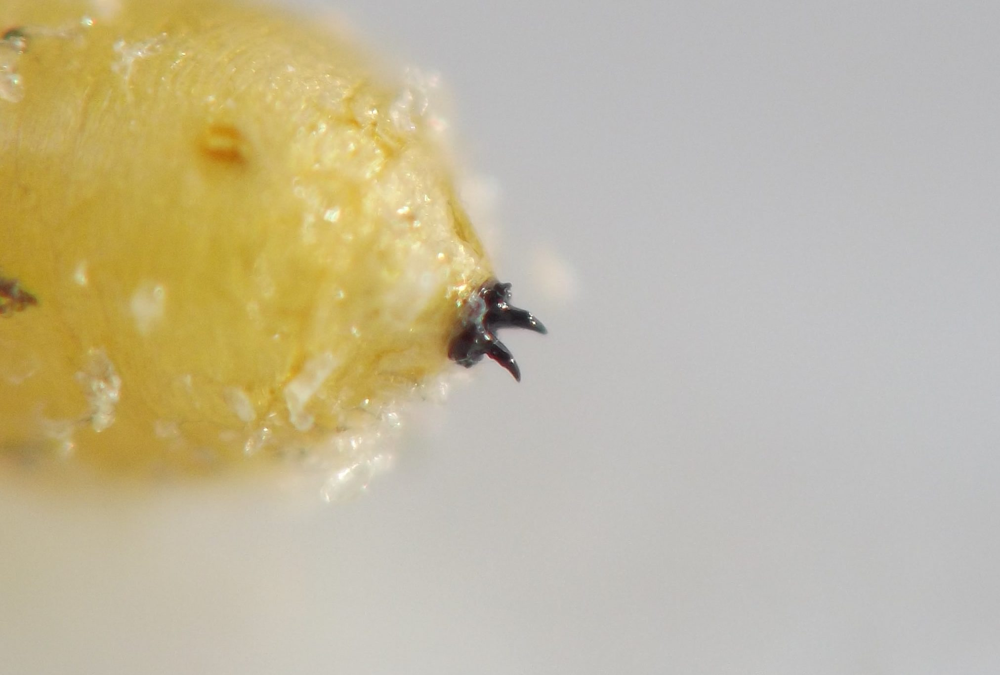
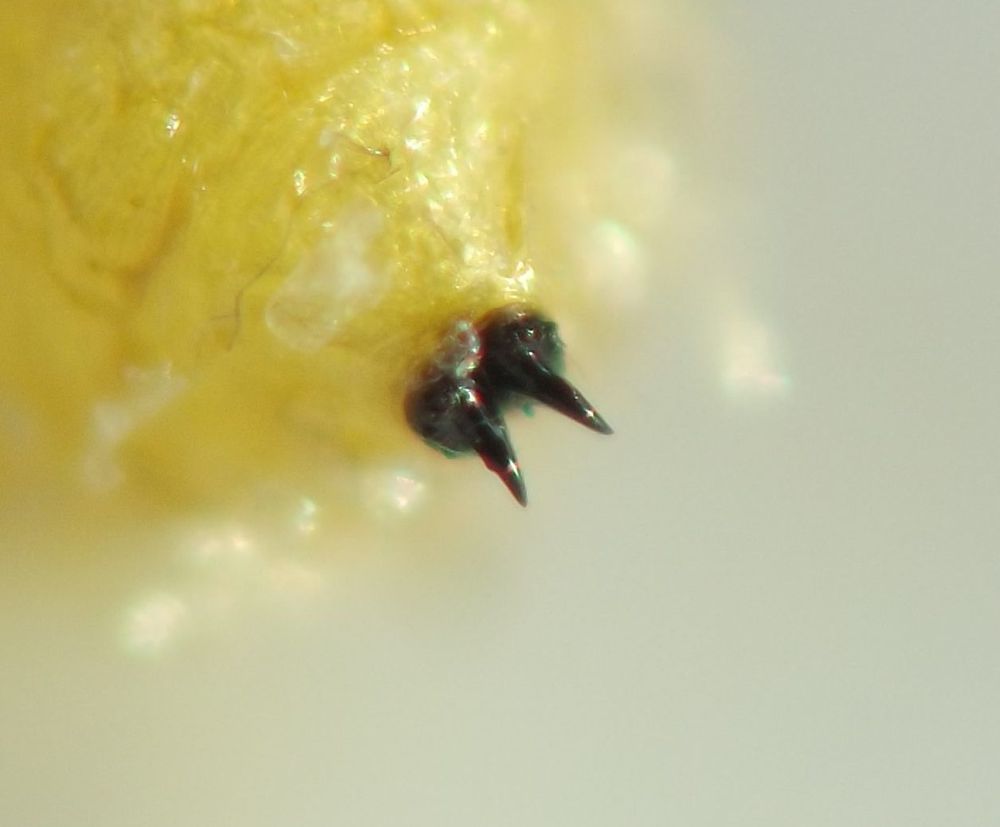
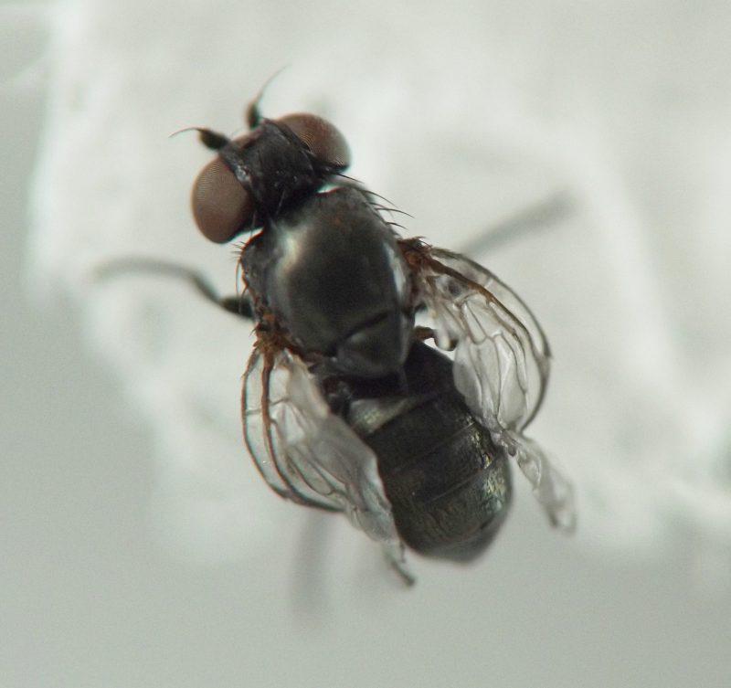
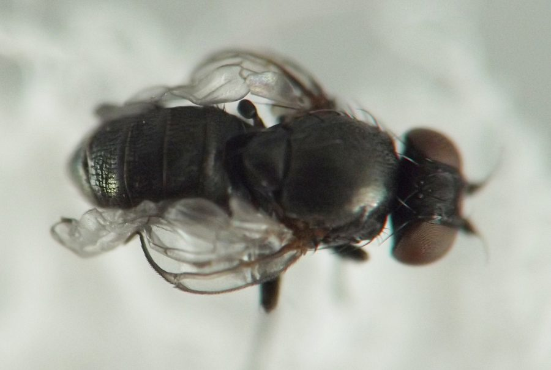
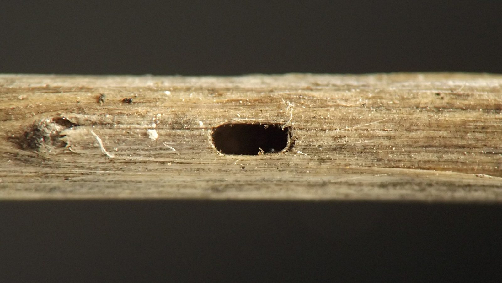
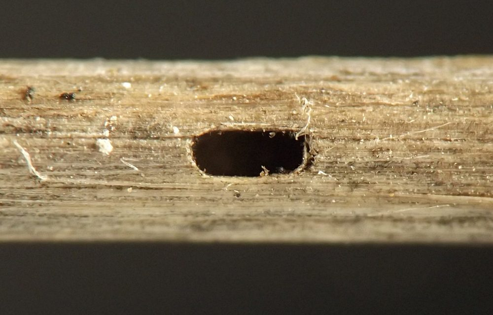

Stem borer (Diptera: Agromyzidae) in Thlaspi
| Record no.: | 0574 |
|---|---|
| Feeding guild: | Stem borer |
| Taxonomy: | Diptera: Agromyzidae: Melanagromyza sp. |
| Stages observed: | trace, puparium, adult |
| Distribution observed: | IA |
| Hosts in Thlaspi: | T. arvense (field pennycress) |
I reared an adult of this stem borer in March 2022 from a puparium collected from a tunneled stem in early August 2021.
The puparia have extremely pronounced black horns on the posterior spiracular plates -- perhaps the strongest horns I encountered on Melanagromyza puparia in the survey.
One puparium I found in a tunneled stem was accompanied by a tiny Coleoptera larva, which gave rise to an equally tiny reddish-brown adult beetle that appeared to belong to the Latridiidae (minute brown scavenger beetles).

 Prev
Prev



















Page created: October 2, 2026. Last update: none